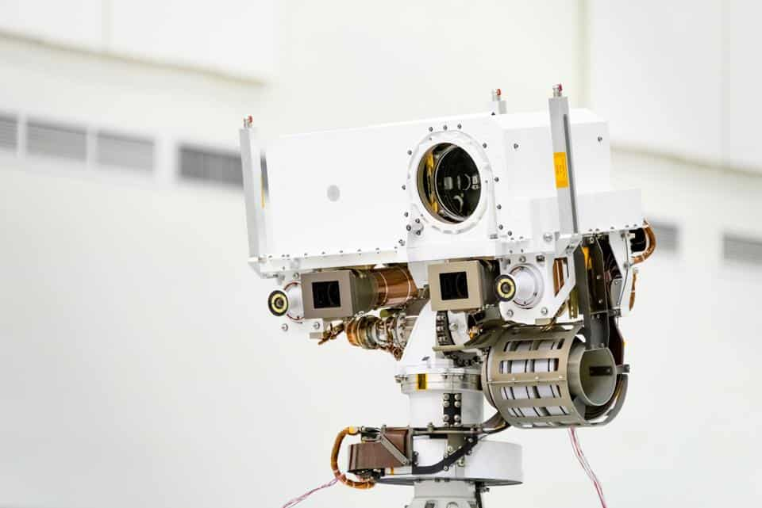

NASA's newest Mars rover begins its journey to hunt for alien life.
By Ineza Bonté | Posted on 19 Aug 2020
At 7:50 a.m. ET, NASA’s Perseverance rover, bound for Mars, blasted off from Kennedy Space Center in Cape Canaveral, Florida. Soaring into the sky atop an Atlas V rocket, Perseverance is now settling in for its seven-month interplanetary flight. The rover’s target: Jezero Crater, the site of an ancient crater lake and an erstwhile river delta that the rover will scour for signs of past Martian life.
With its newest, $2.4-billion robot en route to Mars, NASA is setting out to answer a question that has nagged humanity for as long as astronomers have pointed telescopes at the reddish world: Is there—or was there once—life on our neighboring planet?
“Our strategy is to look very deep in time, back to this time when we believe Mars and Earth were much more similar,” says deputy project scientist Ken Williford of NASA’s Jet Propulsion Laboratory (JPL). “Studying Mars and its ancient environments—what can we learn about our place in the universe? Are we alone? Have we always been alone?”
But exploring Jezero won’t be easy. The first test for Perseverance will be a perilous, seven-minute plunge through the thin Martian atmosphere, scheduled for February 18, 2021. Surviving that risky descent means relying on a heat shield, a parachute, a new navigation system, and a hovering sky crane that will lower the rover to Jezero’s soil—all without any input from mission controllers on Earth. Once down, Perseverance will deploy a small, featherweight helicopter named Ingenuity, and over the mission’s first few weeks on Mars, the little chopper will find out whether powered flight in Mars’s thin air is within human capability.
Lessons from an alien desert
Perseverance was named by seventh-grader Alex Mather, from Northern Virginia, who thought the name captured an essential component of exploring extreme alien environments. Now on the cusp of a mission to determine once and for all whether life might have been common on Mars, the name Perseverance couldn’t be more apt.
For decades, scientists have searched for alien life-forms—but the field of astrobiology has only recently become mainstream science. Today, the field is booming. Perseverance is heading to Mars, future missions are targeting frozen moons in the outer solar system where life could thrive today, and labs on Earth are zeroing in on the origin of our own planet’s organisms.